👑 Ciro, o Grande
Fundador do Império Persa Aquemênida e responsável pela expansão e unificação de vastos territórios.
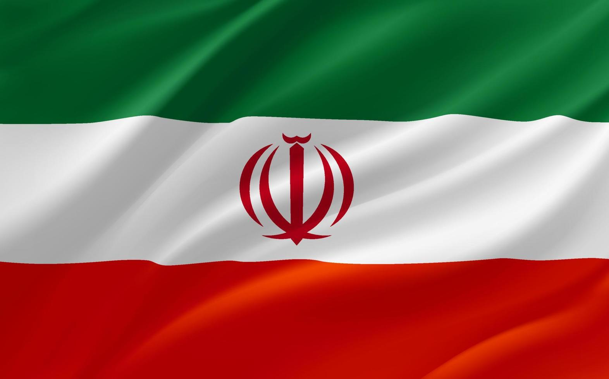
Um país de contrastes, cultura rica, história lendária e belezas
que surpreendem a cada olhar.
A história do Irã remonta a mais de 2.500 anos, tendo como berço o grandioso Império Persa Aquemênida, fundado por Ciro, o Grande, e eternizado nas ruínas de Persépolis. Ao longo dos séculos, a região testemunhou a ascensão de dinastias poderosas como a Sassânida e, posteriormente, a fusão cultural com o Islã a partir do século VII. Esse encontro de tradições culminou na Era de Ouro sob a dinastia Safávida, que unificou o território moderno, oficializou o islamismo xiita e deixou um legado arquitetônico e artístico deslumbrante, marcado por praças monumentais e mesquitas de azulejos icônicos.
Fundador do Império Persa Aquemênida e responsável pela expansão e unificação de vastos territórios.
Fortaleceu o império, organizou sua administração e contribuiu para a construção de Persépolis.
Fundador da Dinastia Safávida e responsável pela unificação do Irã moderno e pela oficialização do islamismo xiita.
Promoveu o auge cultural e arquitetônico do Irã, transformando Isfahan em um importante centro artístico e comercial.
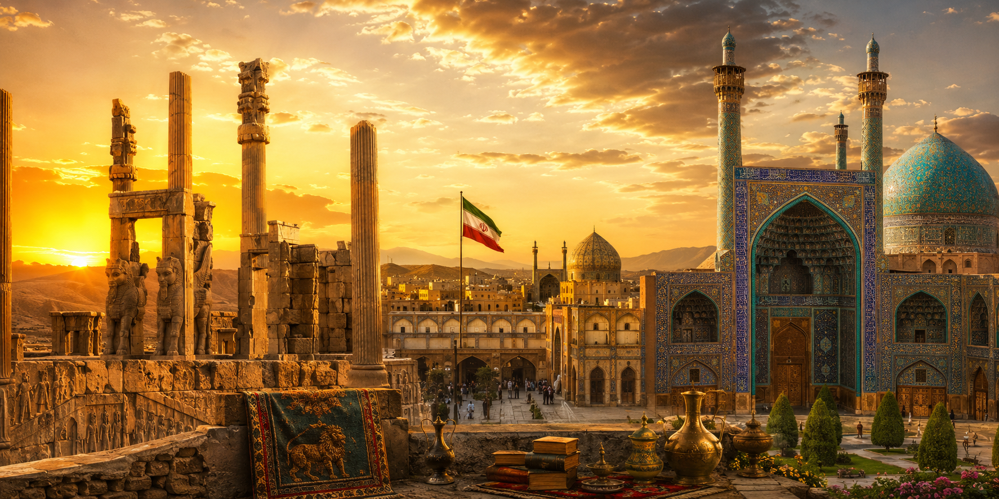
No século XX, o país passou por profundas transformações políticas com a modernização forçada da dinastia Pahlavi, culminando na histórica Revolução de 1979, que transformou o país na atual República Islâmica do Irã. Apesar das intensas rupturas governamentais e das inúmeras invasões sofridas ao longo dos milênios, a essência da identidade persa demonstrou uma resiliência extraordinária. Elementos fundamentais como a língua farsi, a rica tradição poética e as celebrações milenares do Nowruz — o Ano Novo Persa — continuam vivos e vibrantes, preservando a herança de uma das civilizações mais influentes do mundo.

Além das expressões artísticas, o cotidiano iraniano é moldado por um profundo senso de comunidade e rituais milenares, onde a hospitalidade é levada ao extremo por meio do Ta'arof, um complexo código de etiqueta e gentileza mútua. A celebração mais importante do país é o Nowruz, o Ano Novo Persa, uma festa de origem zoroatrista que celebra a chegada da primavera e a renovação da vida com o ritual da mesa do Haft-Sin. Juntamente com uma culinária aromática rica em açafrão, romã e ervas frescas, e o hábito indispensável de compartilhar um bom chá, essas tradições revelam a alma de um povo acolhedor e orgulhoso de suas raízes.
A cultura do Irã é uma das mais ricas e antigas do mundo, profundamente enraizada na herança persa e expressa de forma brilhante através das artes, da arquitetura e da literatura. A poesia ocupa um lugar quase sagrado no coração dos iranianos, que reverenciam mestres clássicos como Hafez, Rumi e Ferdowsi como pilares da sua identidade, mantendo a língua farsi viva e poética através dos séculos. Essa sensibilidade estética também se reflete na arquitetura monumental do país — famosa por seus intrincados mosaicos de azulejos geométricos e reflexos de espelhos — e na tapeçaria persa, uma arte milenar onde cada padrão e cada nó contam histórias detalhadas de vilas e dinastias passadas.
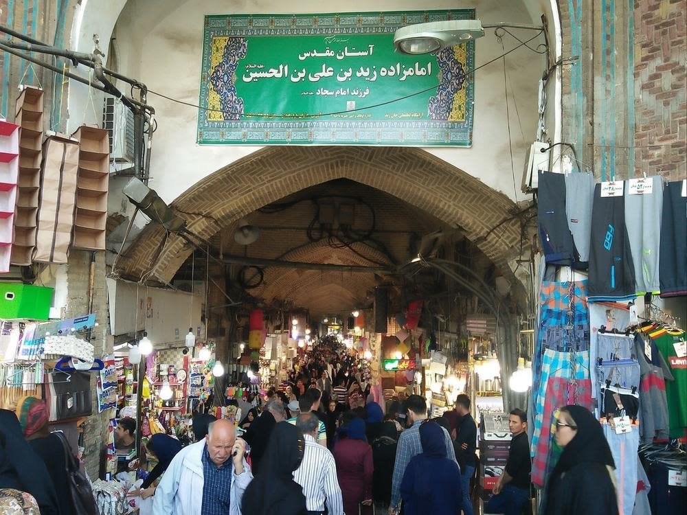
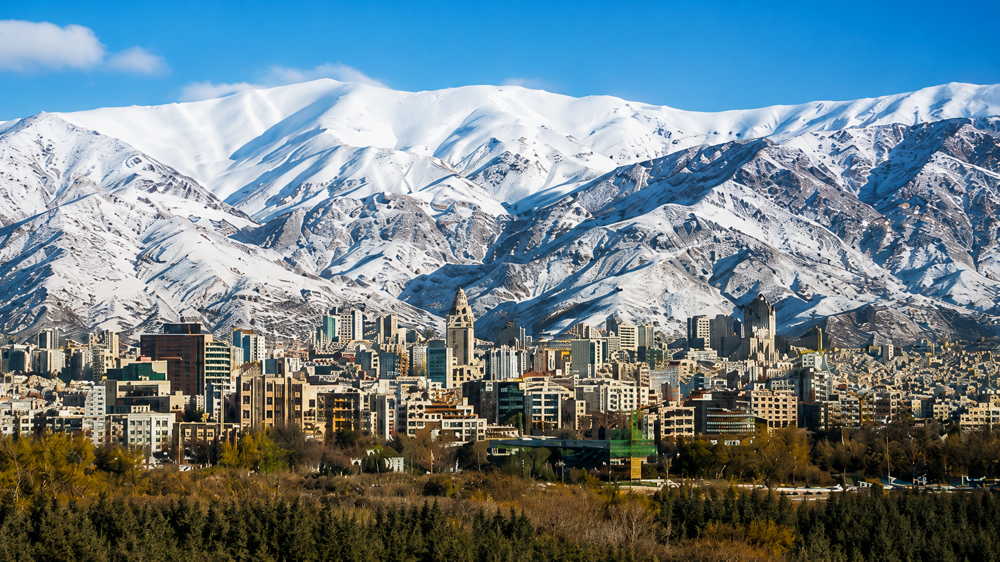
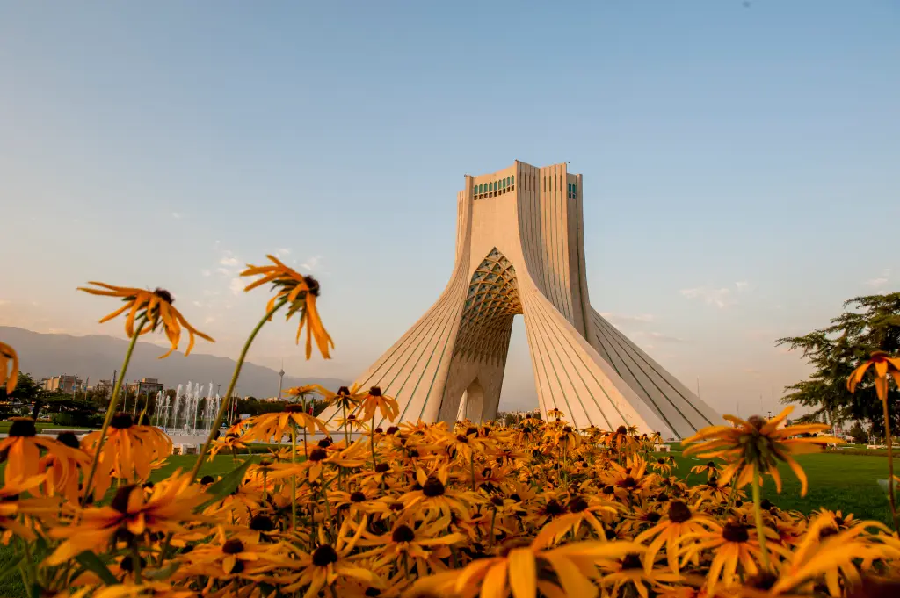
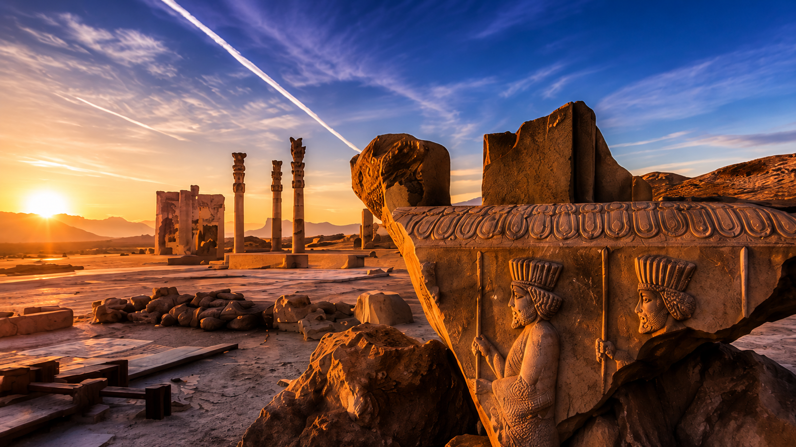
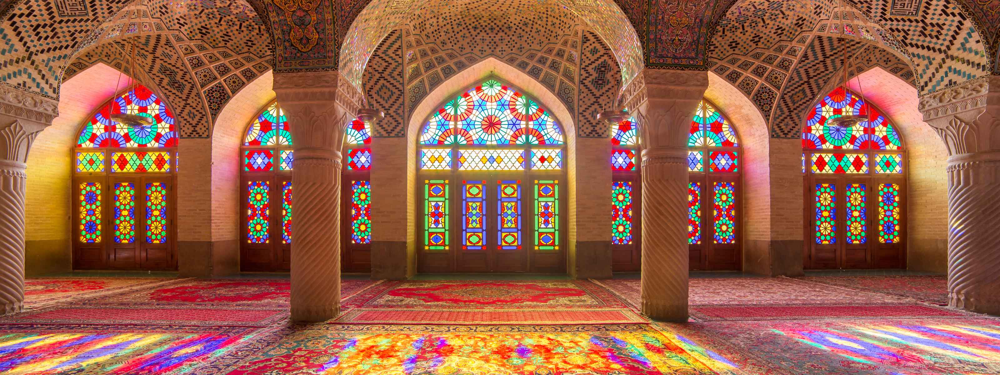
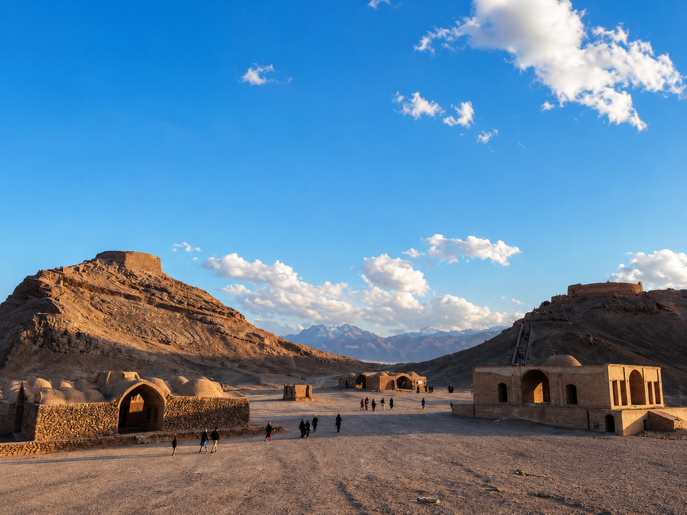
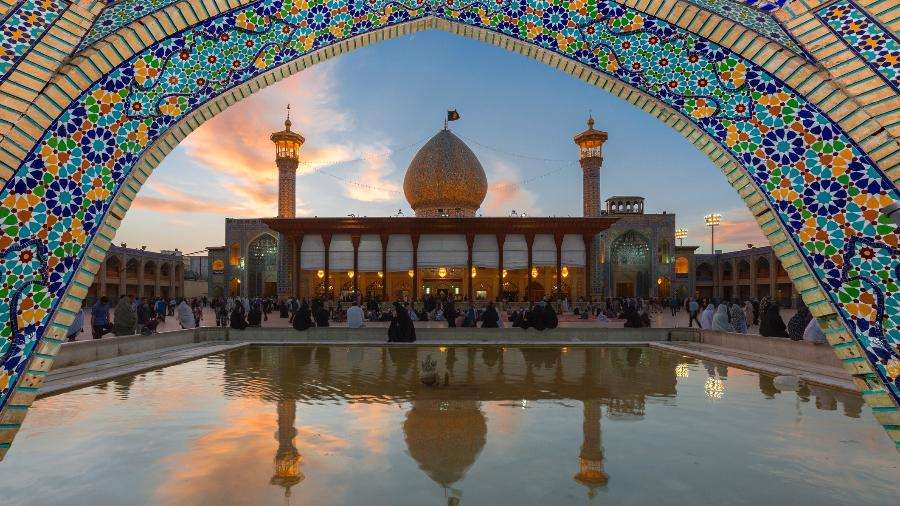
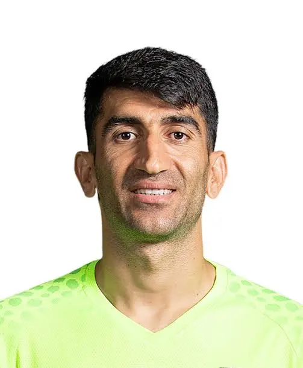
Com 1,94 m e cerca de 85 kg, ele atua pelo Tractor SC (Irã). É famoso por sua enorme envergadura e por deter o recorde mundial do lançamento de bola mais longo feito com as mãos em uma partida oficial.
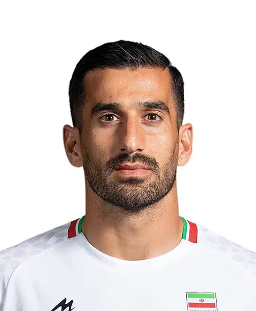
Lateral-esquerdo de 1,76 m e 74 kg, joga no Sepahan SC (Irã). É um dos líderes históricos em convocações e o capitão moral do time pela sua liderança em campo.
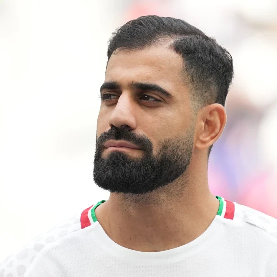
Zagueiro central forte de 1,88 m e 83 kg, defende o Persepolis FC (Irã). É conhecido pela excelente força física em disputas aéreas e imposição na grande área.
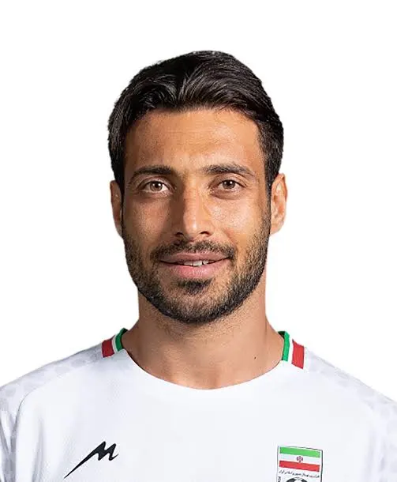
Zagueiro veterano de 1,82 m e 80 kg, joga pelo Tractor SC (Irã). Destaca-se pelo estilo agressivo na marcação e pelo tempo de bola preciso nos desarmes.
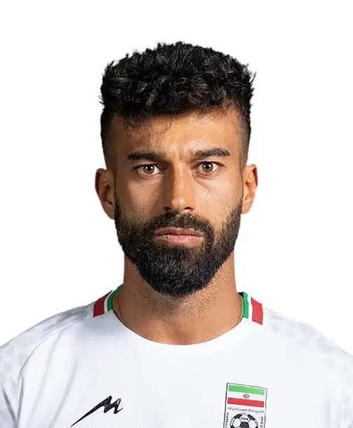
Lateral-direito de 1,85 m e 75 kg, defende o Foolad FC (Irã). É um defensor muito ofensivo, veloz e especialista em cobranças de falta e cruzamentos.
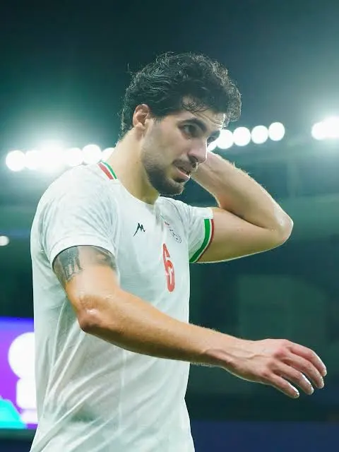
Volante de 1,90 m e 78 kg, atua no Shabab Al-Ahli (Emirados Árabes). É o responsável por dar proteção à zaga e tem excelente visão para iniciar as jogadas de ataque.
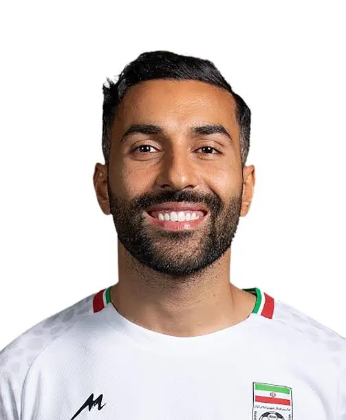
Meia-armador com 1,76 m e 75 kg, defende o Kalba FC (Emirados Árabes). Nascido na Suécia e com passagem pela Premier League inglesa, ele traz a criatividade, drible curto e finalizações de média distância.
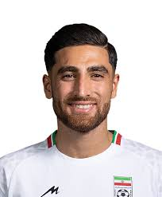
Meia-atacante ou ponta de 1,80 m e 77 kg, atua no F.C.V. Dender E.H. (Bélgica). É um dos atletas mais vitoriosos da geração, com boa força física e chutes potentes de fora da área.
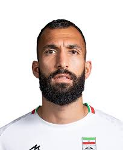
Volante ou zagueiro de 1,92 m e 80 kg, joga no Esteghlal FC (Irã). É um jogador essencialmente defensivo, famoso pelo gol decisivo que marcou na Copa do Mundo de 2022.
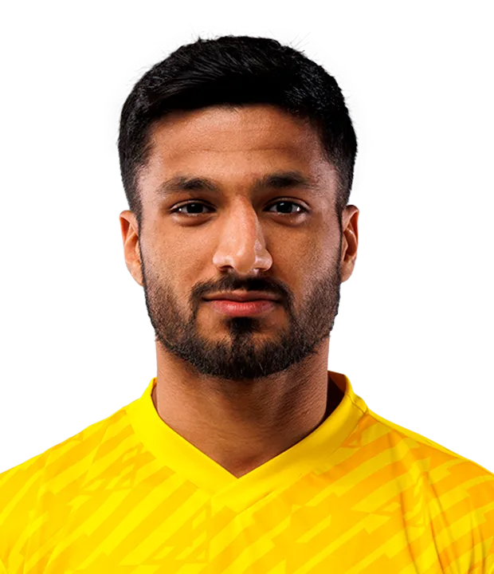
Meia ofensivo com 1,86 m e 79 kg, joga no FC Rostov (Rússia). Converte força física em arrancadas velozes pelos lados do campo para surpreender as defesas adversárias.
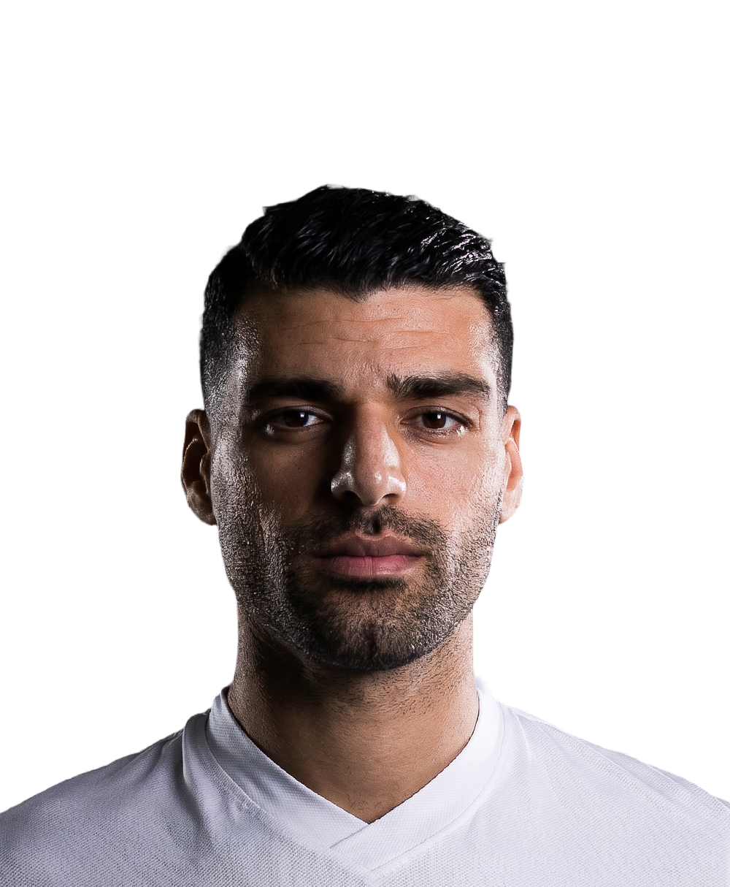
A grande estrela, capitão e centroavante do time. Tem 1,87 m, 83 kg e atua no Olympiacos (Grécia). Destaca-se pelo posicionamento inteligente, faro de gol apurado e capacidade de criar assistências.
Atacante veloz de 1,66 m e 60 kg, defende o Al-Nasr (Emirados Árabes). Apesar de baixo, compensa com muita agilidade, dribles rápidos e facilidade em quebrar linhas defensivas em velocidade.